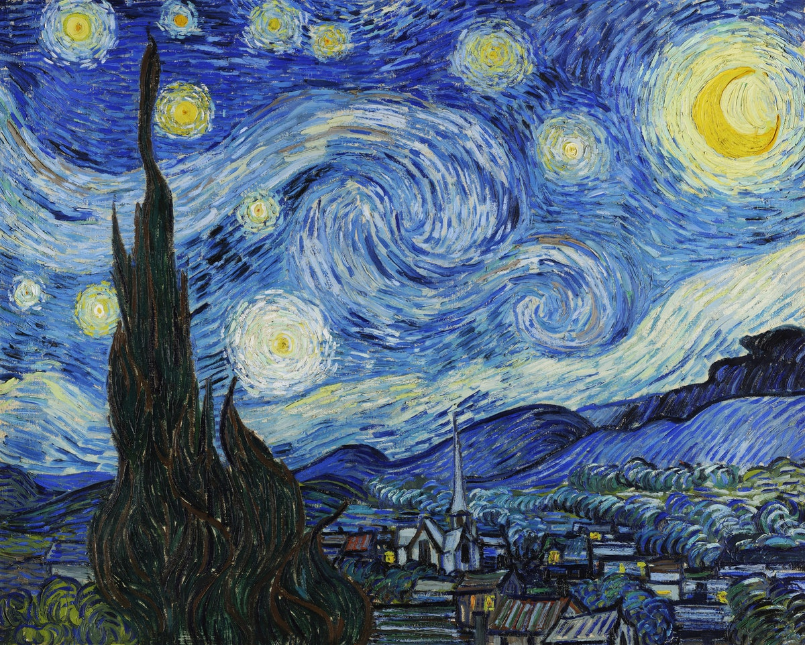
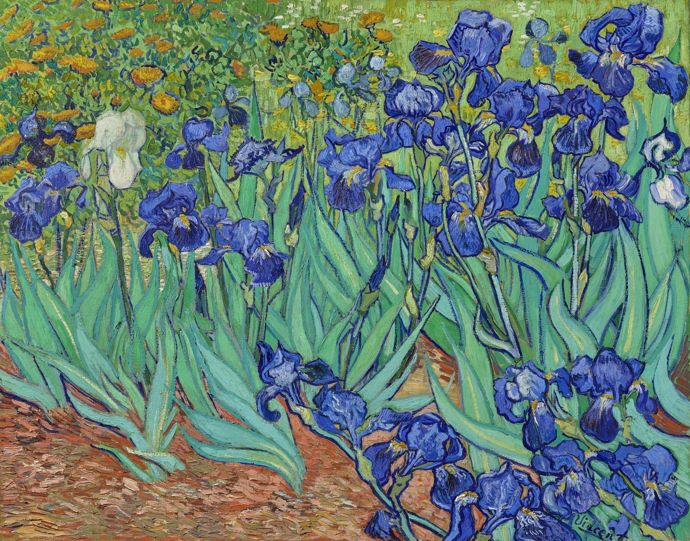
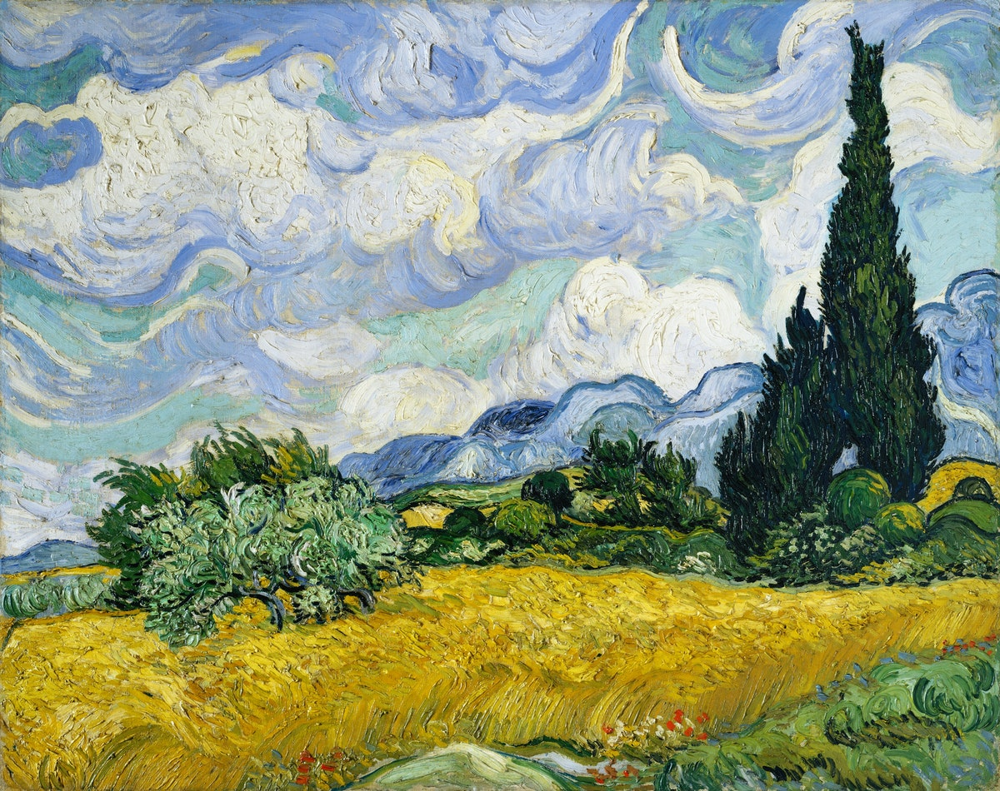
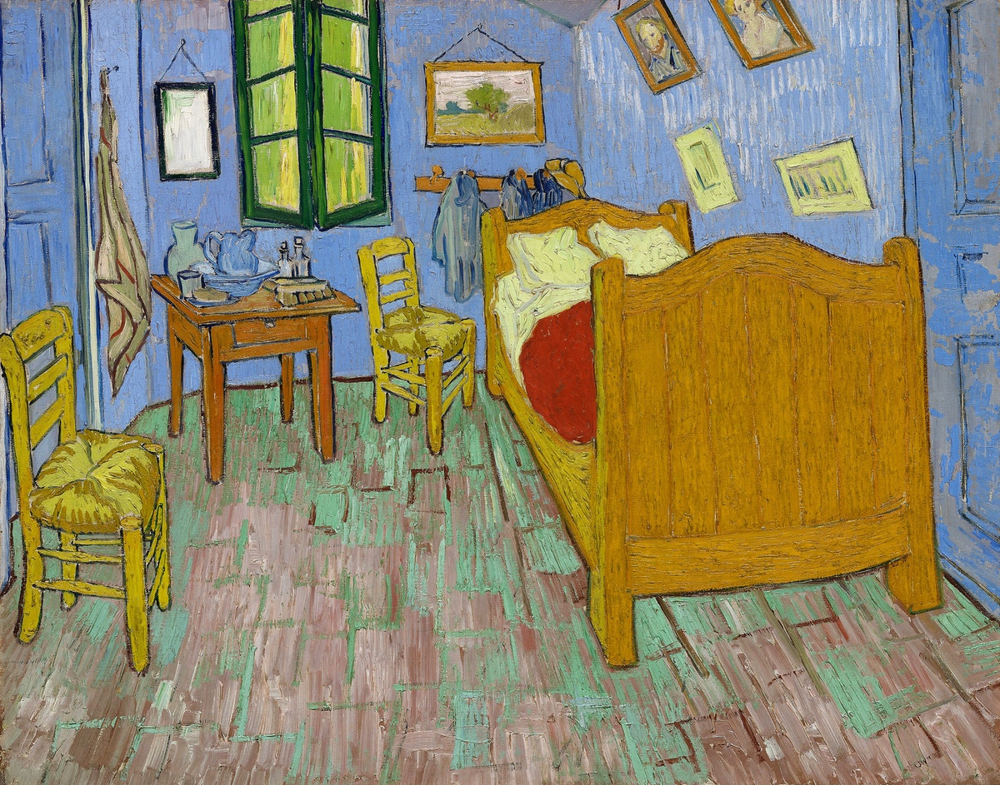
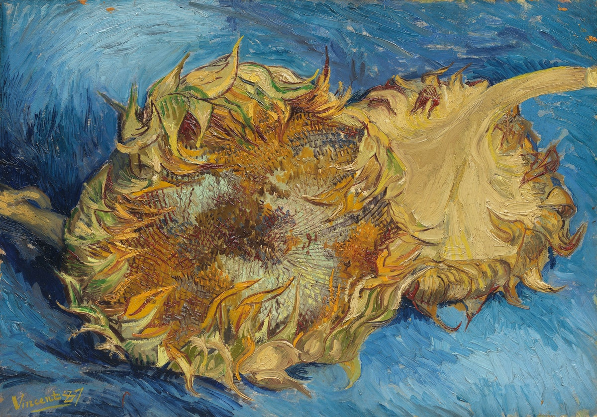
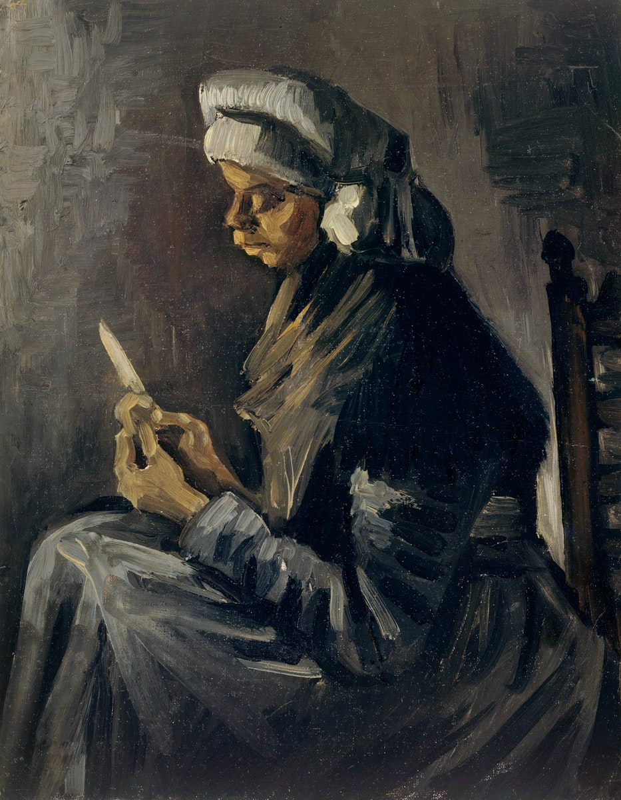
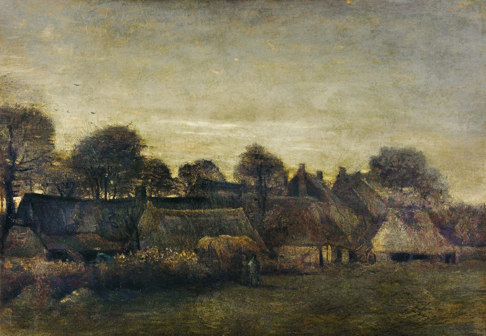

In just over a decade, Van Gogh completed about 900 oil paintings, most of which date from the last two years of his life.
Here are some of his artworks.
The Starry Night - 1889
Irises - 1889
Wheat Field with Cypresses - 1889
Bedroom in Arles - 1888
Sunflowers - 1887
The Potato Peeler - 1885
Farming Village at Twilight - 1884
“ Great things are not done by impulse, but by a series of small things brought together. ”